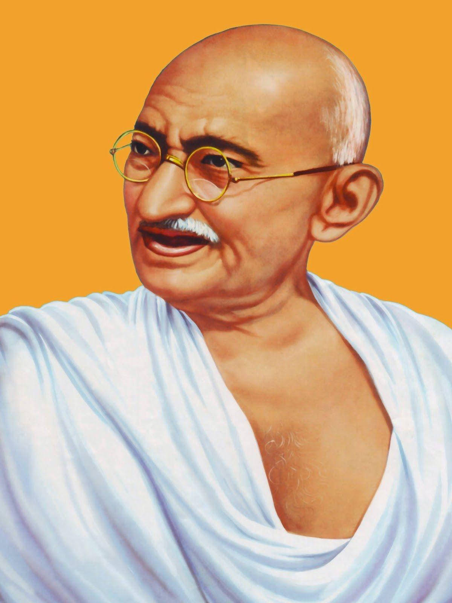
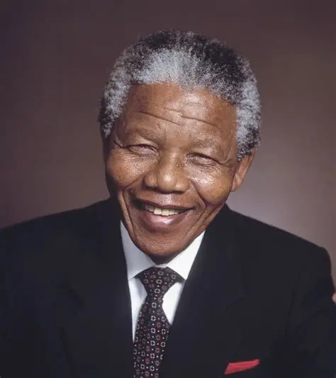

Explore the lives of influential political leaders who shaped history through leadership, vision, and service to their nations.

Born: 2 October 1869
Died: 30 January 1948
Nationality: Indian
Profession: Lawyer & Political Leader
Mahatma Gandhi led India's struggle for independence through non-violent civil disobedience. His philosophy of truth and peace inspired freedom movements across the world.

Born: 18 July 1918
Died: 5 December 2013
Nationality: South African
Profession: Political Leader & Activist
Nelson Mandela fought against apartheid and became South Africa's first democratically elected President. He dedicated his life to equality, justice, and reconciliation.